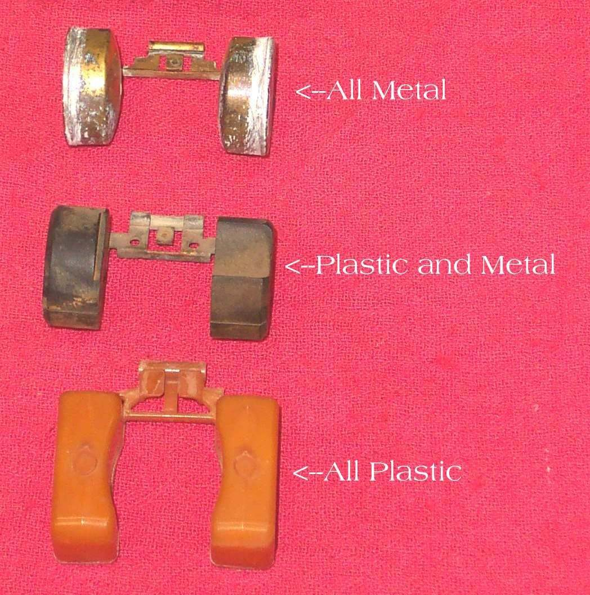
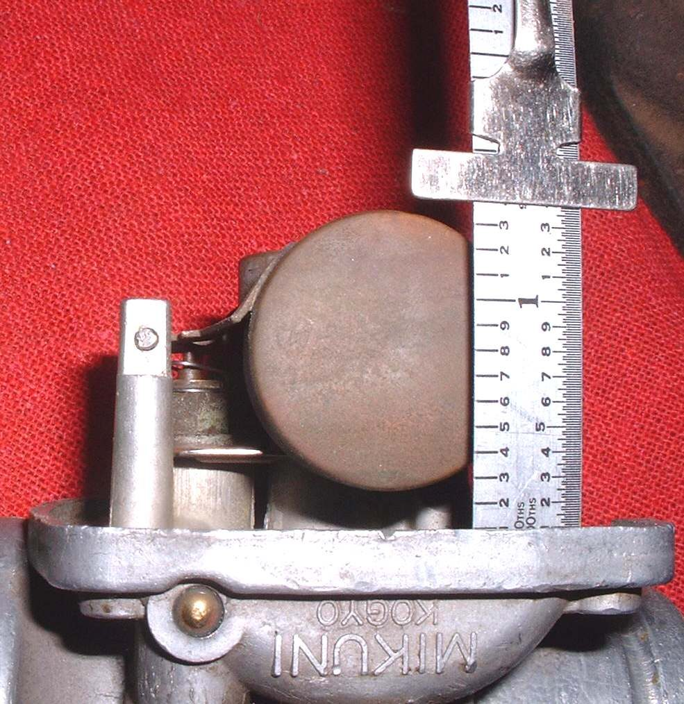
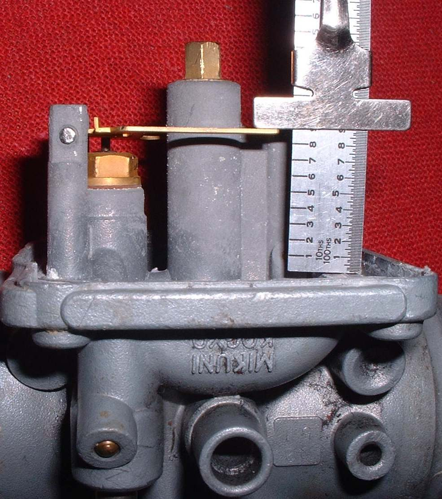
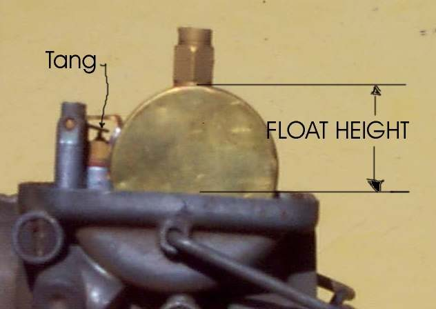
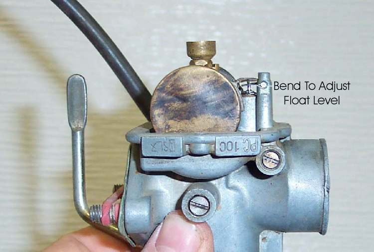

The float and the needle valve hold the fuel level in the bowl. A level that is too high floods the engine and can leak fuel out of the overflow tube, or into the engine and oil. A slightly high level makes the mixture a little rich, and a low level makes it a little lean. Each carburettor has its own float height, found in the manual. This page adds the method to Check the carburettor float and needle valve.
Safety
- Fuel is flammable. Drain the bowl into a container and keep flames away.
- Do not blow hard into the fuel inlet. Use very light air only.
You need
- The float height from your bike's manual and whether it is measured with or without the bowl gasket.
- A ruler or depth gauge.
Steps
- Take off the float bowl. Look at the float. A metal float tang can be bent. Most plastic floats cannot be adjusted, though some have a metal insert that can.
- If the manual says to measure with the gasket, fit it. If not, leave it off.
- Turn the carburettor so the float hangs and the tang just touches the needle valve, with the needle not pushed in. A light way to find the point is to put a tube on the fuel inlet and blow very gently while raising the float slowly with one finger. The moment the air stops flowing is the float height point.
- Measure from the carburettor face to the top of the float. Compare with the manual value.
- Bend the tang up or down to match. For double floats, many manuals ask only that the float arm is parallel with the gasket surface. Check your manual.
- If no value is available, set the level just below the top of the float bowl, with no fuel coming from the overflow tube. Adjust from there.
- Check the float and pin for wear, dents and rust. Water that froze in a metal float can crush it, and a crushed float makes the carburettor overflow. A float that is cracked, soaked or crushed must be replaced.
- After the job, fit the bowl and check with fuel on.
Check your work
- The float height matches the manual and no fuel comes from the overflow tube.
- The engine runs without fuel smell.
If it did not fix the problem
- Overflow continues: replace the needle and seat. See Fuel pours out of the carburettor overflow pipe.
- Fuel found in the oil: change the oil. See Oil smells of fuel.